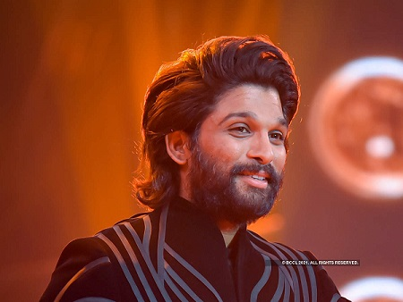

I am a Human.I can eat.I can breathe.I can pissI and Bhavs are Lust friends. One day definitely we will make out.
I am Mortal.I will die certainly one day.
I love my country.Allu Arjun (born 8 April 1983) is an Indian actor who primarily works in Telugu cinema. Known for his dancing abilities, he is a recipient five Filmfare Awards South and three Nandi Awards.[3][4] One of the highest paid actors in India,[5] he has been featured in Forbes India's Celebrity 100 list since 2014.[6] After his debut in Gangotri (2003), Allu appeared in Sukumar-directed Arya (2004) which earned him Nandi Special Jury Award.[7] In the following years, he starred in films such as Bunny (2005), Happy (2006) and Desamuduru (2007). Allu won his first Filmfare Award as Best Actor for Parugu (2008).[8] His consecutive films, Arya 2 (2009), Vedam (2010), Varudu (2010) and Badrinath (2011), failed to perform at the box office.[9][10] His role in Rudhramadevi (2015) as Gona Ganna Reddy won him Filmfare Award for Best Supporting Actor and Nandi Award for Best Character Actor.[11][12] Films like Race Gurram (2014), Sarrainodu (2016) and Duvvada Jagannadham (2017), brought him back on success track with each grossing more than ₹100 crore.[13] He collaborated with director Trivikram Srinivas thrice for Julayi (2012), S/O Satyamurthy (2015) and Ala Vaikunthapurramuloo (2020). All three are successful with the latter grossing over ₹262 crore at the box office
I love my country.Allu Arjun (born 8 April 1983) is an Indian actor who primarily works in Telugu cinema. Known for his dancing abilities, he is a recipient five Filmfare Awards South and three Nandi Awards.[3][4] One of the highest paid actors in India,[5] he has been featured in Forbes India's Celebrity 100 list since 2014.[6] After his debut in Gangotri (2003), Allu appeared in Sukumar-directed Arya (2004) which earned him Nandi Special Jury Award.[7] In the following years, he starred in films such as Bunny (2005), Happy (2006) and Desamuduru (2007). Allu won his first Filmfare Award as Best Actor for Parugu (2008).[8] His consecutive films, Arya 2 (2009), Vedam (2010), Varudu (2010) and Badrinath (2011), failed to perform at the box office.[9][10] His role in Rudhramadevi (2015) as Gona Ganna Reddy won him Filmfare Award for Best Supporting Actor and Nandi Award for Best Character Actor.[11][12] Films like Race Gurram (2014), Sarrainodu (2016) and Duvvada Jagannadham (2017), brought him back on success track with each grossing more than ₹100 crore.[13] He collaborated with director Trivikram Srinivas thrice for Julayi (2012), S/O Satyamurthy (2015) and Ala Vaikunthapurramuloo (2020). All three are successful with the latter grossing over ₹262 crore at the box office